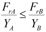
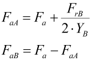
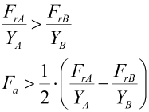
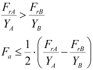
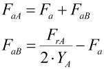

|
|
|


计算面对面或背对背布置中轴承的轴向力
由于轴承中滚道的倾斜，径向载荷会在圆锥滚子轴承、角接触主轴球轴承和角接触球轴承中产生轴向反作用力。在分析当量设计载荷时，必须考虑这些数据。
轴向反作用力根据 SKF（滚动轴承样本）计算，与 FAG 中定义的值完全一致。
对于背对背布置中的轴承，左轴承 A、右轴承 B，外部轴向力沿 A-B 方向时，适用以下数据：
条件 | 公式 |
 |  |
 | |
 |  |
FrA,FrB | 轴承 A、B 上的径向力 |
Y A,Y B | Y 系数（轴承 A、B） |
Fa | 外部轴向力 |
FaA,FaB | 轴承 A、B 上的轴向力 |
对于所有其他情况（面对面布置或轴向力方向相反），只需将公式反向即可。
这些计算得到的内部张力值显示在主窗口中。如果实际的内部力更高（例如由于使用了弹簧组），您可以手动更改该值。
Calculating axial forces on bearings in face-to-face or back-to-back arrangements
Because of the inclination of the raceways in the bearing, a radial load generates axial reaction forces in taper roller bearings, angular contact spindle ball bearings and angular contact ball bearings. This data must be taken into account when the equivalent design load is analyzed.
Axial reaction forces are calculated in accordance with SKF (rolling bearing catalog) which exactly match the values defined in FAG.
For bearings in a back-to-back arrangement, left bearing A, right bearing B, outer axial force in A-B direction, the following data applies:
Condition | Formula |
FrA,FrB | Radial force on bearing A, B |
Y A,Y B | Y coefficient of bearing A, B |
Fa | External axial force |
FaA,FaB | Axial force on bearing A, B |
For all other cases (face-to-face arrangement or axial force in the other direction), simply reverse the formula.
These calculated internal tension values are displayed in the main window. If the actual internal forces are higher, for example, due to the use of spring packages, you can change the value manually.